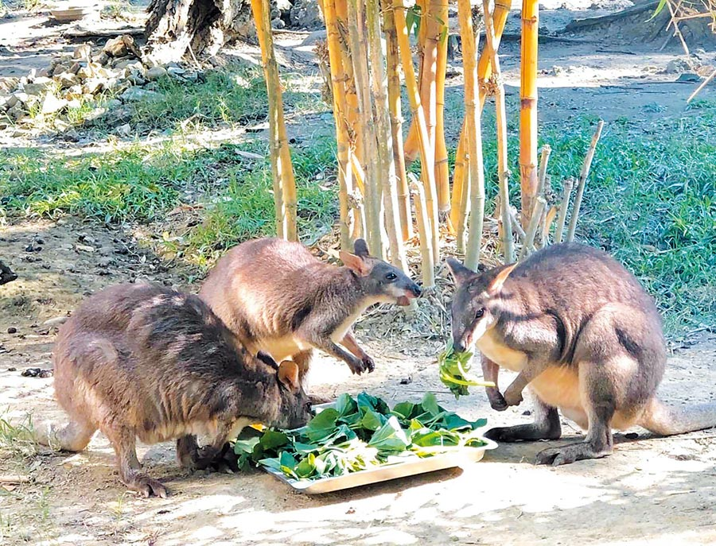
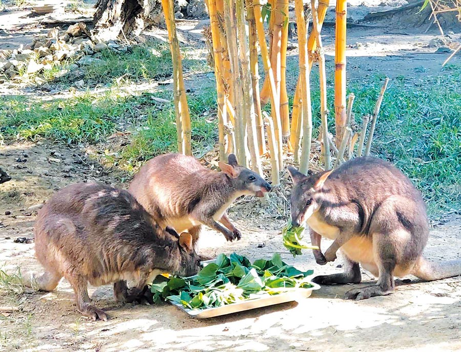
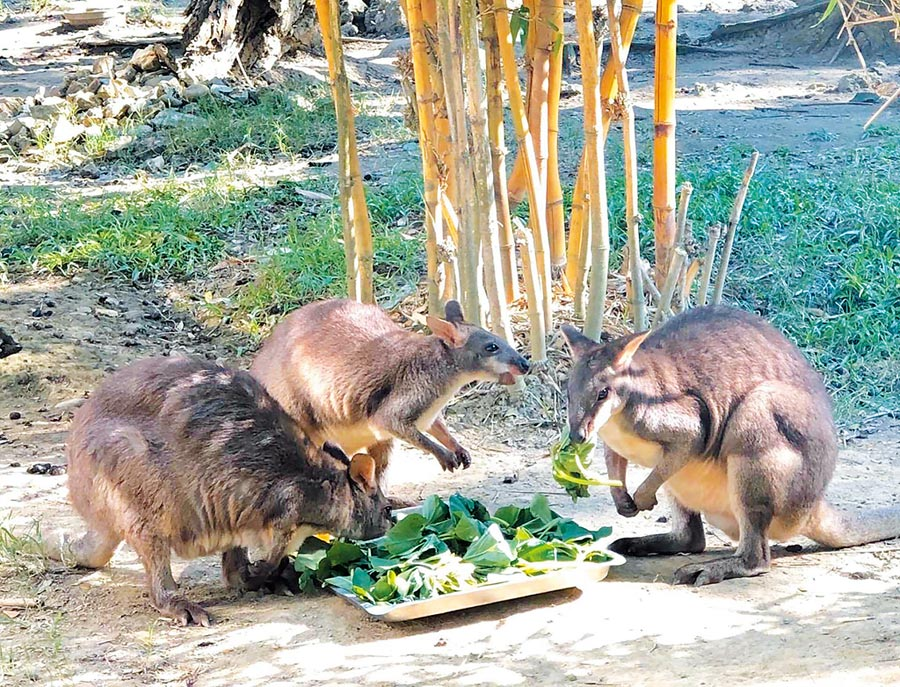

觀光局長邱俊龍指出，「小兵報到動物營」包括有「壽Q家族黑熊見面會」、「野生動物小學堂」及「動物小兵闖關趣」等精彩活動，也開放報名生態攀樹體驗活動，歡迎民眾兒童節連假到壽山動物園，來場知性與趣味兼俱的軍事動物探險之旅。
壽山動物園主任莊絢智表示，「動物小兵闖關趣」2日下午登場，挑選園區內符合「軍事習性」動物，以寓教於樂方式規畫趣味闖關活動，讓小朋友了解為什麼沼林袋鼠彈跳力這麼好？為什麼長臂猿的可在樹上一直擺盪不會累？
「動物小兵闖關趣」，現場發放300張闖關卡，透過闖關活動，體驗軍事訓練、同時了解動物習性，只要完成3道關卡，即可獲精美禮品，當日也邀請野生動物獸醫師章愛梅進行野生動物深度解說。